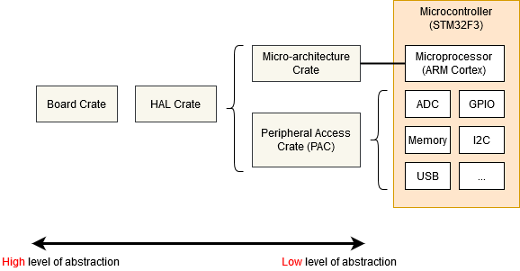

内存映射寄存器 (Memory Mapped Registers)
嵌入式系统仅靠执行普通的 Rust 代码并在 RAM 中搬运数据是走不远的. 如果我们要把任何信息传入或传出系统 (无论是闪烁一个 LED, 检测一次按键, 还是通过某种总线与片上外设 (Peripheral) 通信), 都必须涉足外设以及它们的 “内存映射寄存器 (Memory Mapped Register)” 的世界.
你很可能会发现, 访问微控制器外设所需的代码已经被写好了, 可能位于以下某一个层次:

- 微架构 crate (Micro-architecture Crate) - 这类 crate 处理任何对微控制器所用处理器内核有用的通用例程, 以及使用该特定类型处理器内核的所有微控制器通用的任何外设. 例如 cortex-m crate 提供了启用和禁用中断 (Interrupt) 的函数, 这些函数对所有基于 Cortex-M 的微控制器都是相同的. 它还提供对所有基于 Cortex-M 的微控制器都包含的 ‘SysTick’ 外设的访问.
- 外设访问 crate (Peripheral Access Crate, PAC) - 这类 crate 是为你的微控制器的特定型号定义的各种内存包装寄存器的薄包装. 例如 tm4c123x 对应 Texas Instruments 的 Tiva-C TM4C123 系列, stm32f30x 对应 ST-Micro 的 STM32F30x 系列. 在这里, 你将直接与寄存器交互, 遵循微控制器技术参考手册 (Technical Reference Manual) 中给出的每个外设的操作说明.
- HAL crate - 这些 crate 为你的特定处理器提供了对用户更友好的 API, 通常是通过实现 embedded-hal 中定义的一些通用 trait (特征) 来做到这一点. 例如, 这个 crate 可能提供一个
Serial结构体, 其构造函数接收一组适当的 GPIO 引脚和一个波特率, 并提供某种write_byte函数来发送数据. 关于 embedded-hal 的更多信息, 请参见 可移植性 (Portability) 一章. - 开发板 crate (Board Crate) - 这些 crate 在 HAL crate 的基础上更进一步, 它们针对你正在使用的特定开发套件或开发板, 预先配置了各种外设和 GPIO 引脚, 例如用于 STM32F3DISCOVERY 开发板的 stm32f3-discovery.
开发板 crate
如果你刚接触嵌入式 Rust, 开发板 crate 是一个完美的起点. 它们很好地抽象了在开始学习这个主题时可能让人望而生畏的硬件细节, 并让标准任务变得简单, 比如点亮或熄灭一个 LED. 它暴露的功能在不同的板子之间差异很大. 由于本书的目标是保持与硬件无关, 开发板 crate 不会被本书覆盖.
如果你想用 STM32F3DISCOVERY 开发板进行实验, 强烈建议看看 stm32f3-discovery 开发板 crate, 它提供了闪烁开发板 LED, 访问其罗盘, 蓝牙等功能. Discovery 这本书很好地介绍了开发板 crate 的使用.
但如果你正在使用一个还没有专用开发板 crate 的系统, 或者你需要现有 crate 没有提供的功能, 请继续阅读, 我们将从最底层, 即微架构 crate 开始.
微架构 crate
我们来看看所有基于 Cortex-M 的微控制器都通用的 SysTick 外设. 我们可以在 cortex-m crate 中找到一个相当底层的 API, 并像这样使用它:
#![no_std]
#![no_main]
use cortex_m::peripheral::{syst, Peripherals};
use cortex_m_rt::entry;
use panic_halt as _;
#[entry]
fn main() -> ! {
let peripherals = Peripherals::take().unwrap();
let mut systick = peripherals.SYST;
systick.set_clock_source(syst::SystClkSource::Core);
systick.set_reload(1_000);
systick.clear_current();
systick.enable_counter();
while !systick.has_wrapped() {
// 循环
// Loop
}
loop {}
}SYST 结构体上的函数与 ARM 技术参考手册中为该外设定义的功能非常接近. 这个 API 中没有任何关于 “延时 X 毫秒” 的内容 - 我们必须用一个 while 循环自己粗略地实现它. 注意, 在我们调用 Peripherals::take() 之前, 我们无法访问 SYST 结构体 - 这是一个特殊的例程, 它保证整个程序中只有一个 SYST 结构体. 关于这一点, 请参阅 外设 (Peripherals) 一节.
使用外设访问 crate (PAC)
如果我们只限于每个 Cortex-M 都包含的基本外设, 嵌入式软件开发就做不了多少事情. 在某些时候, 我们将需要编写一些针对我们使用的特定微控制器的代码. 在本例中, 假设我们有一个 Texas Instruments 的 TM4C123 - 一个中端的 80MHz Cortex-M4, 带有 256 KiB Flash. 我们将引入 tm4c123x crate 来使用该芯片.
#![no_std]
#![no_main]
use panic_halt as _; // panic handler
use cortex_m_rt::entry;
use tm4c123x;
#[entry]
pub fn init() -> (Delay, Leds) {
let cp = cortex_m::Peripherals::take().unwrap();
let p = tm4c123x::Peripherals::take().unwrap();
let pwm = p.PWM0;
pwm.ctl.write(|w| w.globalsync0().clear_bit());
// Mode = 1 => 上下计数模式
// Mode = 1 => Count up/down mode
pwm._2_ctl.write(|w| w.enable().set_bit().mode().set_bit());
pwm._2_gena.write(|w| w.actcmpau().zero().actcmpad().one());
// 528 个周期 (264 个向上, 264 个向下) = 4 个循环每条视频扫描线 (2112 个周期)
// 528 cycles (264 up and down) = 4 loops per video line (2112 cycles)
pwm._2_load.write(|w| unsafe { w.load().bits(263) });
pwm._2_cmpa.write(|w| unsafe { w.compa().bits(64) });
pwm.enable.write(|w| w.pwm4en().set_bit());
}
我们访问 PWM0 外设的方式与之前访问 SYST 外设完全一样, 只不过我们调用的是 tm4c123x::Peripherals::take(). 由于这个 crate 是用 svd2rust 自动生成的, 所以我们寄存器字段的访问函数接受一个闭包, 而不是数值参数. 虽然看起来代码量不小, 但 Rust 编译器可以用它为我们执行大量检查, 然后生成与手写汇编非常接近的机器码! 当自动生成的代码无法确定某个特定访问函数的全部可能参数是否都有效时 (例如, 如果 SVD 将该寄存器定义为 32 位, 但没有说明这些 32 位值中是否有一些具有特殊含义), 该函数就会被标记为 unsafe. 我们可以在上面的例子中看到这一点, 即使用 bits() 函数设置 load 和 compa 子字段时.
读取
read() 函数返回一个对象, 该对象提供对该寄存器内由该芯片制造商的 SVD 文件定义的各种子字段的只读访问. 你可以在 tm4c123x 文档 中找到该特定外设中该特定寄存器的特殊 R 返回类型上可用的所有函数.
if pwm.ctl.read().globalsync0().is_set() {
// 做一些事情
// Do a thing
}写入
write() 函数接受一个带单个参数的闭包. 通常我们称之为 w. 该参数随后提供对该寄存器内由该芯片制造商的 SVD 文件定义的各种子字段的读写访问. 同样, 你可以在 tm4c123x 文档 中找到该特定外设中该特定寄存器的 ‘w’ 上可用的所有函数. 注意, 所有我们没有设置的子字段将为我们设置为默认值 - 寄存器中任何已有的内容都将丢失.
pwm.ctl.write(|w| w.globalsync0().clear_bit());修改
如果我们希望只修改该寄存器中某一个特定的子字段, 而保持其他子字段不变, 我们可以使用 modify 函数. 该函数接受一个带两个参数的闭包 - 一个用于读取, 一个用于写入. 通常我们分别称之为 r 和 w. r 参数可用于检查寄存器的当前内容, w 参数可用于修改寄存器的内容.
pwm.ctl.modify(|r, w| w.globalsync0().clear_bit());modify 函数真正展示了闭包在这里的强大之处. 在 C 语言中, 我们必须先读到一个临时变量中, 修改正确的位, 然后再把值写回去. 这意味着出错的余地相当大:
uint32_t temp = pwm0.ctl.read();
temp |= PWM0_CTL_GLOBALSYNC0;
pwm0.ctl.write(temp);
uint32_t temp2 = pwm0.enable.read();
temp2 |= PWM0_ENABLE_PWM4EN;
pwm0.enable.write(temp); // 糟糕! 写错了变量!
使用 HAL crate
一个芯片的 HAL crate 通常通过为 PAC 暴露的原始结构体实现一个自定义 Trait (特征) 来工作. 通常, 这个 trait 会定义一个名为 constrain() 的函数 (用于单个外设) 或一个名为 split() 的函数 (用于像 GPIO 端口这样有多个引脚的东西). 该函数会消费底层的原始外设结构体, 并返回一个具有更高层 API 的新对象. 这个 API 还可以做类似的事情, 比如让 Serial 端口的 new 函数要求借用某个 Clock 结构体, 而该结构体只能通过调用配置 PLL 并设置所有时钟频率的函数来生成. 这样, 在静态上就不可能在没有先配置好时钟速率的情况下创建一个 Serial 端口对象, 也不可能让 Serial 端口对象把波特率错误地转换成时钟节拍. 一些 crate 甚至为每个 GPIO 引脚可能处于的状态定义了特殊的 trait, 要求用户在使用 Peripheral 之前先将引脚置于正确的状态 (例如, 选择合适的复用功能模式). 而这一切都是零运行时成本的!
让我们看一个例子:
#![no_std]
#![no_main]
use panic_halt as _; // panic handler
use cortex_m_rt::entry;
use tm4c123x_hal as hal;
use tm4c123x_hal::prelude::*;
use tm4c123x_hal::serial::{NewlineMode, Serial};
use tm4c123x_hal::sysctl;
#[entry]
fn main() -> ! {
let p = hal::Peripherals::take().unwrap();
let cp = hal::CorePeripherals::take().unwrap();
// 将 SYSCTL 结构体包装成一个具有更高层 API 的对象
// Wrap up the SYSCTL struct into an object with a higher-layer API
let mut sc = p.SYSCTL.constrain();
// 选择我们的振荡器设置
// Pick our oscillation settings
sc.clock_setup.oscillator = sysctl::Oscillator::Main(
sysctl::CrystalFrequency::_16mhz,
sysctl::SystemClock::UsePll(sysctl::PllOutputFrequency::_80_00mhz),
);
// 用这些设置配置 PLL
// Configure the PLL with those settings
let clocks = sc.clock_setup.freeze();
// 将 GPIO_PORTA 结构体包装成一个具有更高层 API 的对象.
// Wrap up the GPIO_PORTA struct into an object with a higher-layer API.
// 注意它需要借用 `sc.power_control`, 以便能自动给 GPIO 外设上电.
// Note it needs to borrow `sc.power_control` so it can power up the GPIO
// peripheral automatically.
let mut porta = p.GPIO_PORTA.split(&sc.power_control);
// 激活 UART.
// Activate the UART.
let uart = Serial::uart0(
p.UART0,
// 发送引脚
// The transmit pin
porta
.pa1
.into_af_push_pull::<hal::gpio::AF1>(&mut porta.control),
// 接收引脚
// The receive pin
porta
.pa0
.into_af_push_pull::<hal::gpio::AF1>(&mut porta.control),
// 不需要 RTS 或 CTS
// No RTS or CTS required
(),
(),
// 波特率
// The baud rate
115200_u32.bps(),
// 输出处理
// Output handling
NewlineMode::SwapLFtoCRLF,
// 我们需要时钟速率来计算波特率分频
// We need the clock rates to calculate the baud rate divisors
&clocks,
// 我们需要它来给 UART 外设上电
// We need this to power up the UART peripheral
&sc.power_control,
);
loop {
writeln!(uart, "Hello, World!\r\n").unwrap();
}
}